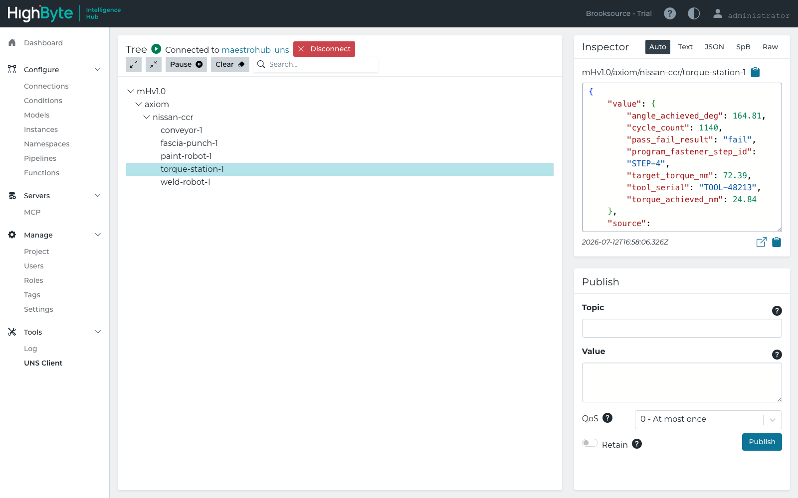

Prepared for
Nissan Smyrna senior management & maintenance leadership
Nissan Smyrna senior management & maintenance leadership
Not a slide of logos — a working system. Five shop-floor equipment types publish live telemetry into a Unified Namespace; Humble's Eva reads it and reasons over causal chains, ranks intervention options, and answers questions against the live database — the actual maintenance-cockpit value. Underneath, the namespace is standards-governed and platform-neutral: a second, independent vendor (HighByte) reads the exact same feed with zero translation, so the platform question never has to gate the value question.
Each piece of equipment is modeled against a real published standard — not an ad-hoc tag list — then flows through a governed UNS topic into Humble's Eva, where causal reasoning, decision workflows, and live Q&A actually happen.
| Equipment | Standard the schema is grounded in | UNS topic |
|---|---|---|
| ABB paint robot (IRB 5500-27) | OPC 40010 — OPC UA for Robotics (MotionDeviceSystem / TaskControl state machine) | mHv1.0/axiom/nissan-ccr/paint-robot-1 |
| Paint shop conveyor section | VDMA 40001 — OPC UA for Machinery, + PackML / ISA-88 TR88.00.02 state machine | mHv1.0/axiom/nissan-ccr/conveyor-1 |
| Fascia punch / piercing press | OPC 40001-2 — OPC UA Metal Forming process values, VDMA forming-machine conventions | mHv1.0/axiom/nissan-ccr/fascia-punch-1 |
| Bodyshop spot-weld robot | OPC 40010 base (robotics) + weld-process fields | mHv1.0/axiom/nissan-ccr/weld-robot-1 |
| Final-assembly torque station | ISO 5393 — torque tool measurement terminology | mHv1.0/axiom/nissan-ccr/torque-station-1 |
This is what a maintenance lead or ops manager actually opens. Eva doesn't just display tags — it surfaces why something is happening, ranks the intervention options with evidence behind each one, and answers direct questions against the live underlying database. Every screen below is a real capture from the running instance, not a mockup.


HighByte Intelligence Hub — a completely separate product from a different vendor, evaluated independently by Nissan — subscribed to the identical MQTT-based Unified Namespace and browsed it with its own native UNS Client, no custom connector, no re-mapping.

The pipeline, schema, and topic layer above is built and run in MaestroHub today. That's an implementation detail, not the decision Nissan needs to make. The point of this whole page is section 2: whatever platform Nissan lands on for governance, the underlying UNS keeps working — so "data governance" debates don't have to stall the value operators and maintenance teams are already getting from Eva.